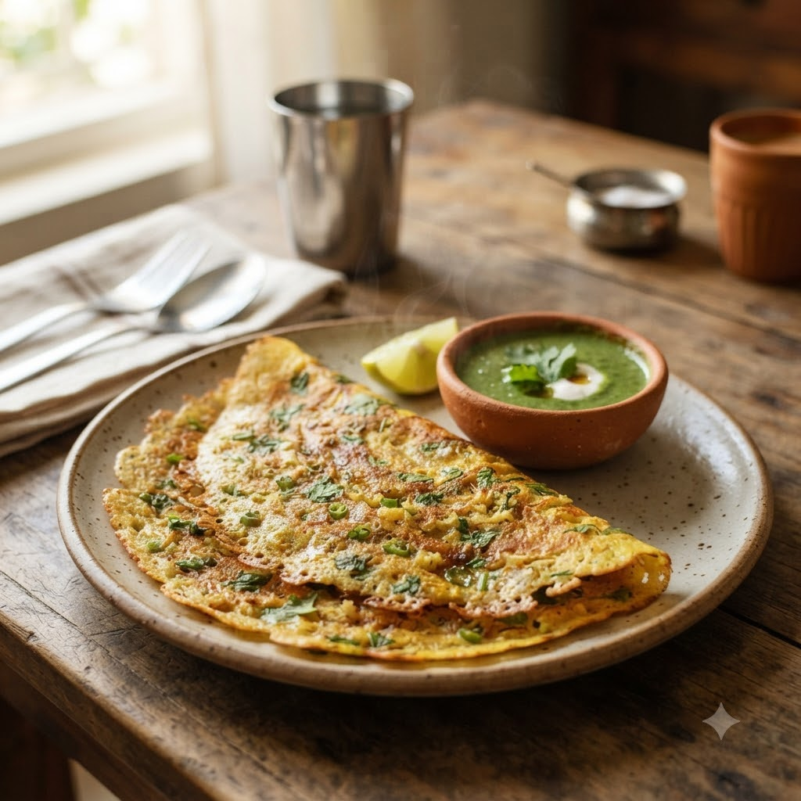

Moong Dal Cheela (Savoury Lentil Pancake)

Moong Dal Cheela (Savoury Lentil Pancake)
Airfryer – Fry (griddle-style) 190°C 12 min makes ~6
Gluten-Free • Vegan • High-Protein • Everyday
Prep ahead: Soak the moong dal for at least 3 hours (or overnight) before grinding into a batter.
Ingredients
- 1 cup yellow moong dal, soaked 3+ hours
- 1 green chilli (hari mirch)
- 1/2 inch ginger (adrak)
- 1/4 tsp cumin seeds (jeera)
- Salt to taste
- Water as needed
- 1/4 cup finely chopped onion & coriander (optional)
- Oil for cooking
Method
1Preheat: Preheat the Airfryer to 190°C for 4 minutes before adding the food to the basket.
2Drain the soaked dal and blend with green chilli, ginger, cumin seeds, salt and just enough water into a smooth, pourable batter.
3Stir in chopped onion and coriander if using.
4Brush the Airfryer’s baking pan or a flat oven-safe dish with oil and preheat.
5Pour a thin layer of batter, spray the top lightly with oil, and cook at 190°C for 6 minutes per side until golden and firm.
6Repeat with the remaining batter; serve hot with chutney or curd.
Tip: A protein-rich, everyday breakfast alternative to besan chilla — no fermentation or resting needed beyond the soak.